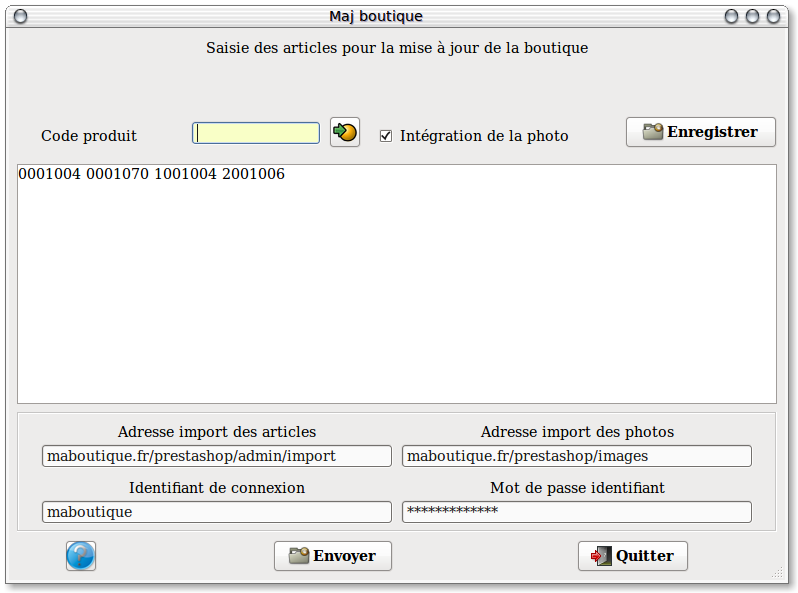

~ Comptabilité et Facturation Laurux ~ |
||
|
|
Ce programme est utilisé pour créer deux fichiers servant à mettre à jour une boutique Prestashop. Un fichier produit, Prd.csv, et un fichier des images associés aux produits, Photo.csv. Ces deux fichiers sont automatiquement transférés sur le site après leur génération.
Note importante: Ce programme ne sera utilisé que pour la création des nouveaux produits et en aucune façon pour la mise à jour des prix car la fonction d'import de Prestashop n'inclue pas, pour l'instant, d'option de mise a jour.
Pour être accessible ce programme devra au préalable être activé en cochant le bouton "gestion de la boutique" dans l'onglet boutique des préfèrences. Dans cet onglet, vous pourrez aussi saisir les coordonnées et mot de passe de votre boutique.

Comment procéder ?
Dans la partie haute on saisira l'ensemble des articles devant être créés sur la boutique. Pour chaque produit on aura la possibilité d'inclure ou non la photo en cochant ou en décochant le bouton "Intégration de la photo".
Si les adresses et mot de passe ont été préalablement saisis dans l'onglet boutique des préfèrences, ces données s'afficheront automatiquement, sinon il faudra les saisir à la main.
En premier on saisira l'adresse du répertoire ou sera envoyé le
fichier contenant les produits. Ce fichier, sous Prestashop, devra
obligatoirement être copié sous le repertoire admin/import de votre site.
Attention, si le repertoire admin a été
renommé, veillez à remplacer admin par le bon libellé du
repertoire.
Ensuite on saisira l'adresse du répertoire ou seront envoyées les
photos.
Puis on saisira l'identifiant de connexion sur le site ainsi que le
mot de passe de l'identifiant.
Lorsque la saisie est terminée, cliquez sur le bouton "Envoyer"
afin de transferer le fichier des produits ainsi que les photos. Sous
Prestashop, lancez ensuite l'import des produits puis l'intégration des
photos.
Nota: Le fichier généré par
Laurux répond aux exigences de mise en forme de prestashop, ainsi, l'import
se fera sans travail de mise en forme particulier.
----------------------------------------------------------------------------------------------------------------------